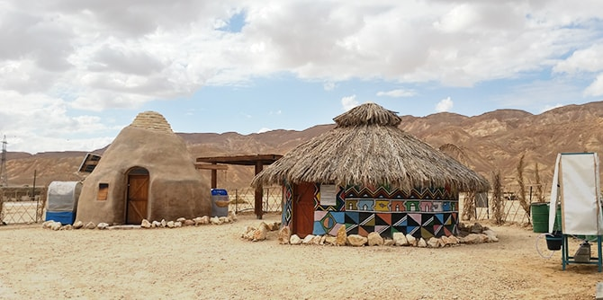

במהלך הריטריט נחשפו העמיתים לפעולות ולמעשים של בוגרים ועמיתים מהתוכנית המקבילה באילת-אילות, תוכנית המתקיימת בחבל ארץ רחוק מבחינה גאוגרפית, אבל קרוב בתפיסה ובתנאי המסגרת של האתגרים המקומיים. בריטריט התקיים מפגש עם חברי קבוצת אילת-איילות, שאפשר התבוננות על הרכיבים הדומים והשונים במציאות שבה פועלים עמיתי הקבוצות.
במהלך הריטריט ביקרו העמיתים בכמה יוזמות באזור, שהן בבחינת דברים הנסתרים מהעין הסטראוטיפית על אילת כעיר תיירות, ועל האזור שבדרך אליה כאזור שומם. העמיתים ערכו סיור למידה במכון הערבה ללימודי הסביבה, שם למדו על המודל החינוכי-חברתי של המכון, וכן ב-Off Grid Village – יוזמה המשמשת כמוזיאון, מודל ומעבדה לבחינת פתרונות מותאמים-תרבותית לקהילות המנותקות מתשתיות ברחבי העולם.

המפגש עם עמיתי קבוצת אילת-אילות היה מרתק: שיתוף והיכרות בין המוכר והזר לשני הצדדים. עמיתי תוכנית אילת-אילות ובוגרי אילת המחזור הראשון צפו בהצגה "ירמה לאור ירח" של תאטרון אלעד - תאטרון מקומי בקיבוץ אילות, אשר התרחשה בין השבילים העוטפים את קיבוץ אילות. אחרי ההצגה התקיימה שיחה עם היוצרים והיוזמים של התיאטרון.
היום השני יוחד להיכרות עם היוזמות התיירותיות של אילת, באמצעות מפגש עם שני עמיתי תוכנית אילת-אילות עומר ארמוזה ויניב בלחסן בריף הדולפינים, ולאחריהם מפגש עם יוזם
המכינה הקדם צבאית בבאר אורה והעומד בראשה, בוגר התוכנית שמעון ביטון.
{kind=link}